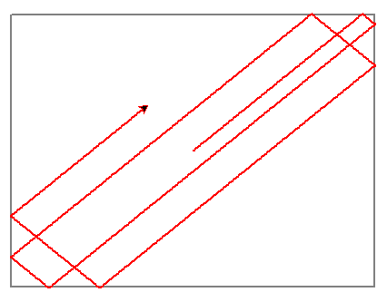
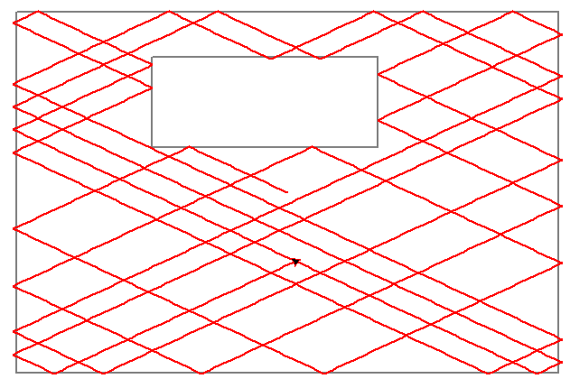
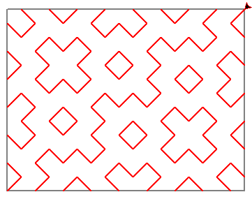
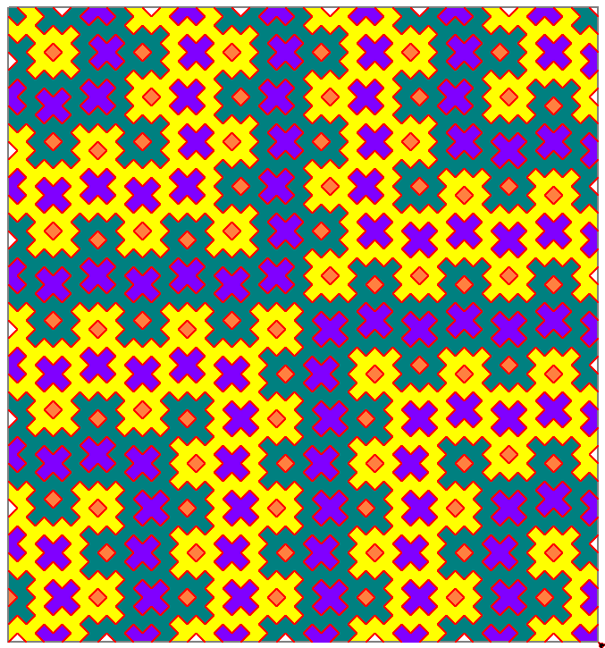
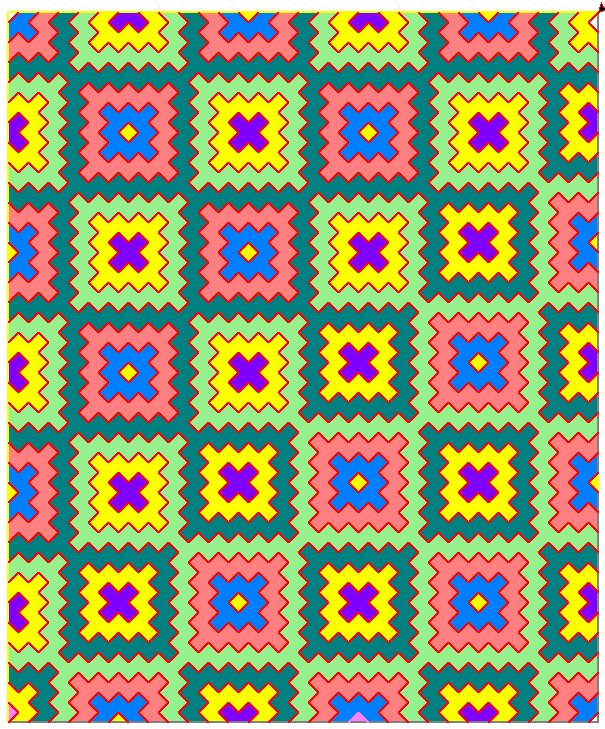
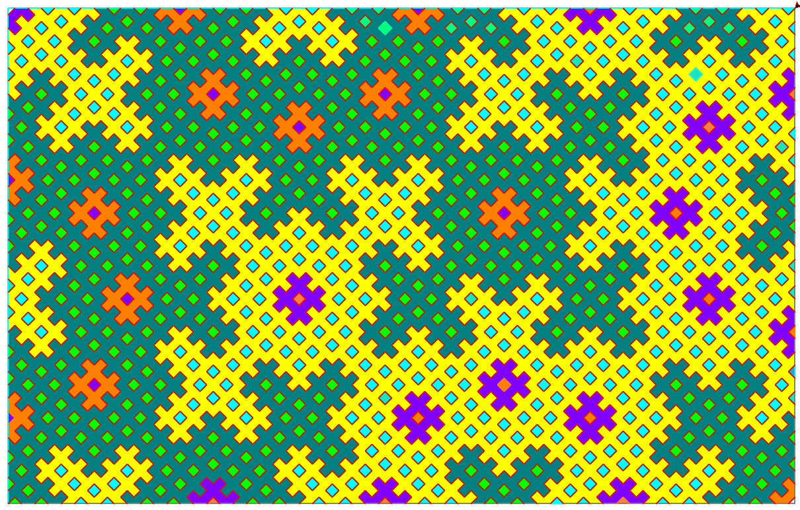

Про модуль turtle в python. Задачи С и D можно решать с помощью модуля tkinter или PILL.
A. Луч света в зеркальной коробочке.
Пусть имеется прямоугольная коробка с зеркальными стенками. Туда запускают луч света под случайным углом. Он будет отражаться от стенок по правилу "угол отражения равен углу падения". Нужно нарисовать путь этого луча. Вернётся ли он когда-нибудь в начальную точку?
Пример:
import turtle
from random import randint
T = turtle.Turtle() #T — это наша черепашка. Можно создавать много черепашек
T.pencolor('red') # Поменять цвет пера на красный
T.pensize(2) # Установить толщину пера 3
angle = 0
T.setheading(angle) # установить фиксированный угол поворота относительно горизонтали
T.pendown() # Опускаем перо (начало рисования)
T.forward(150) # Проползти 150 пикселей вперед
T.left(120)
T.forward(150)
print(T.xcor(),T.ycor()) # напечатать координаты черепашки
print(T.heading()) # напечатать текущий угол поворота
turtle.mainloop() # Задержать окно на экране (эта команда должна быть последней)
Допишите программу так, чтобы черепашка двигалась, отражаясь от стенок заданного прямоугольника.

B. Поставим в нашу зеркальную коробочку прямоугольную преграду с зеркальными стенками. Измените программу так, чтобы луч отражался не только от стенок коробочки, но и от преграды.

С. Непериодические узоры
Имеется прямоугольник размером m на n клеточек (числа m и n взаимно просты, то есть не имеют общих делителей). Из угла прямоугольника (внутрь) выходит луч под углом 45 градусов. Луч отражается от стенок по правилу: угол отражения равен углу падения. луч не простой, а мигающий: пока проходит диагональ одной клеточки, горит, потом на такое же время выключается, потом опять зажигается, и так далее. Нарисуйте ход луча (с учётом мигания).
Движение заканчивается, когда луч снова попадаает в один из углов прямоугольника.

Если взять значения m и n побольше и раскрасить картинку, то видно, что получившийся узор не повторяется, повторяются только отдельные элементы.



D. Какие узоры получатся, если рисовать отрезки не через один, а через два или через три? Или два отрезка рисовать, а третий - нет?